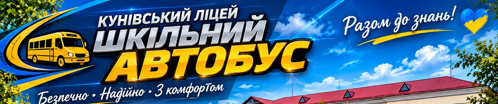

Завантажую маршрут
Моя зупинка
Оберіть зупинку, і сайт покаже, коли до неї приїде автобус.
Погода в Кунові
Радіослухайте в дорозі
Усі пісні
Позиція автобуса оновлюється кожні кілька секунд, поки рейс триває. Час у розкладі орієнтовний.

Завантажую маршрут
Оберіть зупинку, і сайт покаже, коли до неї приїде автобус.
Позиція автобуса оновлюється кожні кілька секунд, поки рейс триває. Час у розкладі орієнтовний.